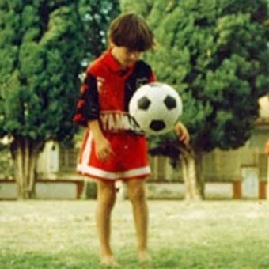
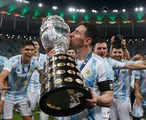

Biografia
Lionel Messi nació el 24 de junio de 1987 en Rosario, Argentina. Desde muy joven, mostró un amor y una habilidad innata por el fútbol. A la edad de cinco años, comenzó a jugar en las categorías inferiores del Club Atlético Newell's Old Boys en su ciudad natal. Su talento excepcional no pasó desapercibido. A los 11 años, fue diagnosticado con una deficiencia hormonal que afectaba su crecimiento, pero esto no impidió que su talento fuera reconocido. Sus habilidades llamaron la atención del FC Barcelona, uno de los clubes más grandes de España.

A los 13 años, Messi se trasladó a Barcelona para unirse a la famosa academia juvenil del club, La Masia. Durante su tiempo en las categorías inferiores, demostró un talento extraordinario y fue ascendido rápidamente al primer equipo. En 2004, a la edad de 17 años, Messi hizo su debut con el FC Barcelona en un partido amistoso. A partir de entonces, su ascenso fue imparable. Rápidamente se convirtió en un pilar fundamental del equipo y jugó un papel clave en la obtención de numerosos títulos, incluyendo la Liga de Campeones de la UEFA y múltiples títulos de La Liga. Messi se destacó por su estilo de juego único y su habilidad excepcional. Su velocidad, agilidad, regate y precisión en el disparo le permitieron convertirse en uno de los goleadores más prolíficos en la historia del fútbol. Ganó múltiples premios individuales, incluyendo el prestigioso Balón de Oro en varias ocasiones
En el ámbito internacional, Messi ha representado a la selección argentina en numerosos torneos. Ha sido una pieza clave en varias ediciones de la Copa América y de la Copa del Mundo. Aunque no ha logrado ganar un título importante a nivel nacional, su contribución al equipo nacional es indiscutible y ha dejado su huella en el fútbol argentino. El legado de Messi trasciende los récords y los premios. Su humildad, su dedicación al juego y su impacto positivo en la comunidad han ganado el respeto y la admiración de fanáticos de todo el mundo. Messi es considerado uno de los mejores futbolistas de todos los tiempos y su legado perdurará en la historia del fútbol. En resumen, la vida de Lionel Messi es un testimonio de su pasión, talento y perseverancia. Desde sus humildes comienzos en Argentina hasta su consagración como una leyenda en el FC Barcelona, su historia es inspiradora y muestra cómo la determinación y el amor por el juego pueden llevar a logros extraordinarios.